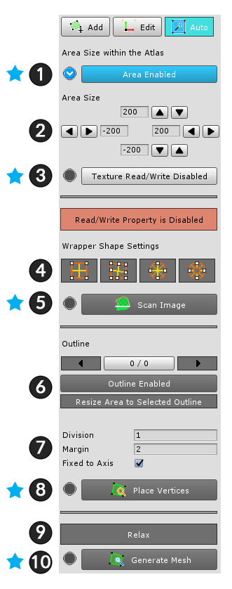
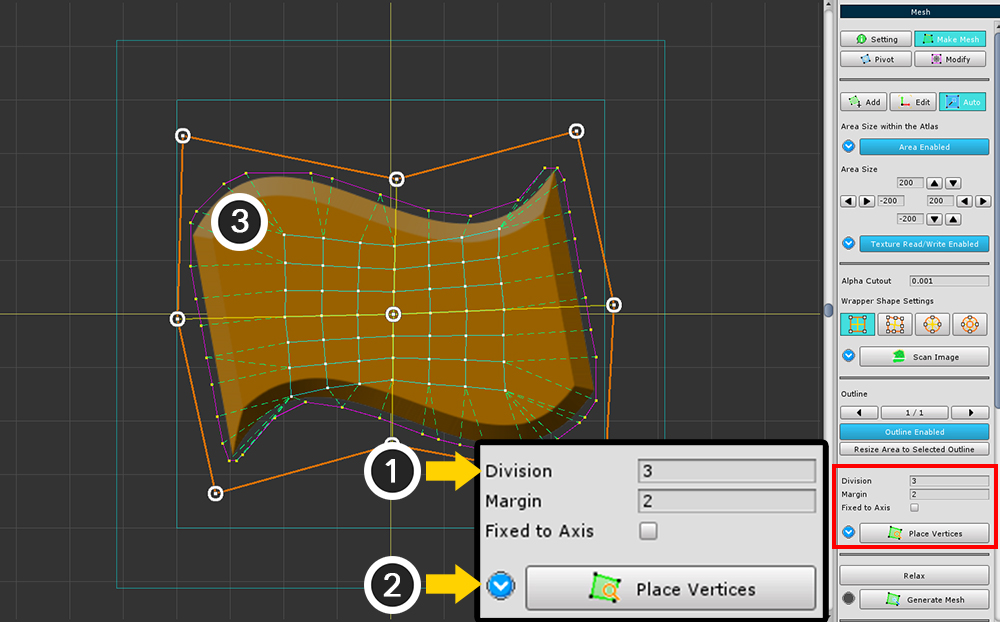
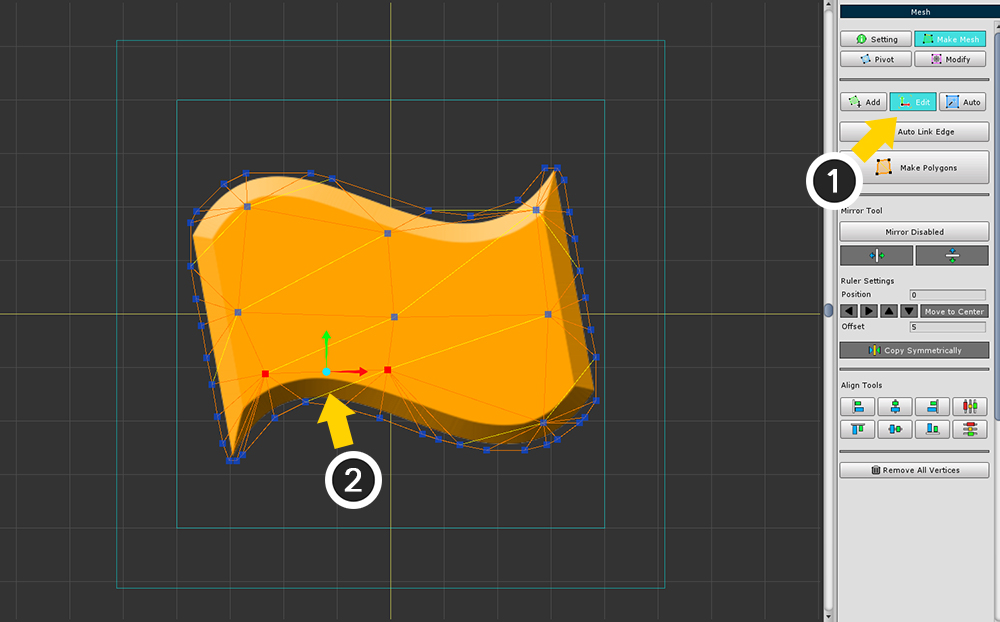
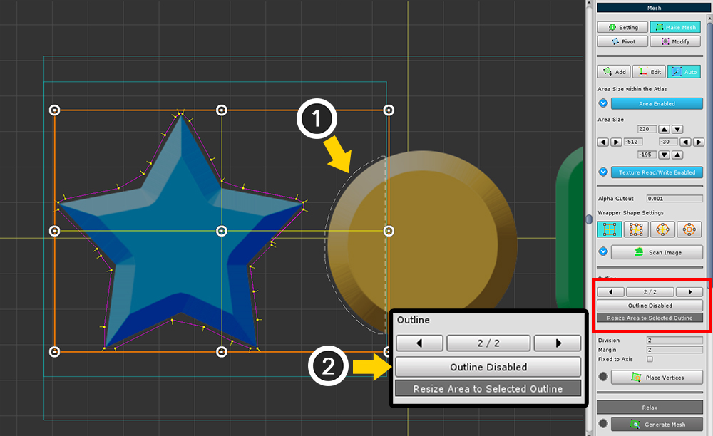
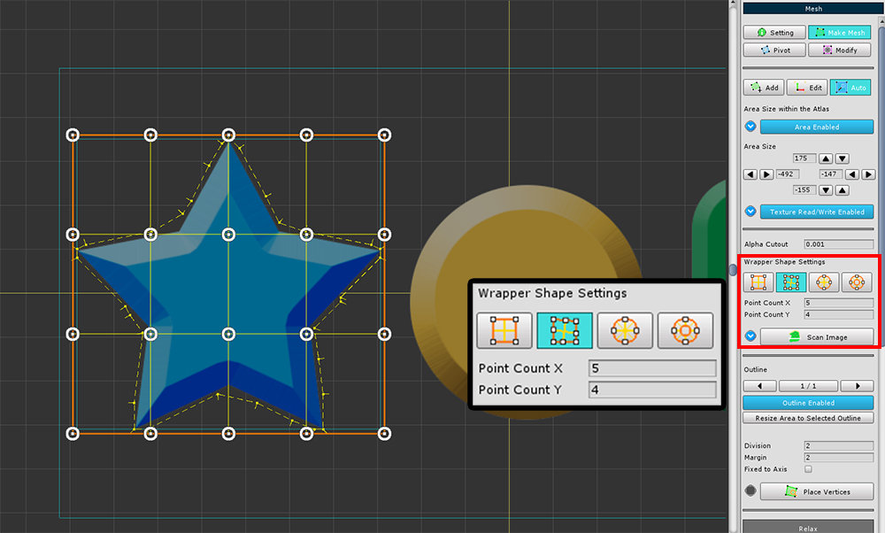
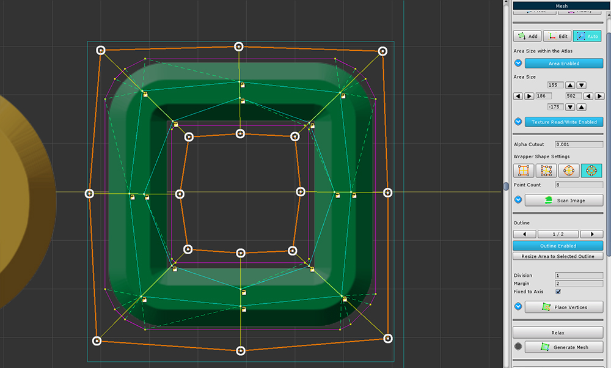

AnyPortrait > 메뉴얼 > 자동으로 메시 생성하기
자동으로 메시 생성하기
1.1.0
자동으로 작업을 대신해준다는 것은 언제나 좋은 이야기입니다.
v1.1.0에 추가된 자동으로 메시를 생성하는 기능을 이용하면 작업 시간을 꽤 단축할 수 있을 것입니다.

(1) 메시를 선택합니다.
(2) Make Mesh 탭을 선택합니다.
(3) Auto 탭을 선택합니다.

(1) 영역(Area)을 활성화합니다.
PSD 파일로부터 메시를 생성했거나 기존에 영역이 설정되었다면 이 옵션은 켜져있는 상태입니다.
(2) 영역의 크기를 설정합니다.
(3) 설정된 영역이 작업 공간에 나타납니다.
자동 메시 생성 UI입니다.
순서대로 각각의 기능들을 실행해야합니다.
필수적으로 눌러야 하는 버튼에는 푸른색 체크 아이콘(V)이 있으며, 오른쪽 설명 이미지에서는 푸른색 별표로 구분하였습니다.
1. Area 설정 : 영역을 켜거나 끕니다. (필수)
2. Area Size : 영역의 크기를 설정합니다.
3. Texture Read/Write 설정 : 텍스쳐의 읽기/쓰기 설정입니다. 텍스쳐의 색상을 읽어서 메시를 생성하기 위해서는 이 기능을 켜야 하지만, 최적화를 위해서는 끄는 것이 좋습니다. (필수)
4. Wrapper Shape : 메시의 형태를 결정하는 Wrapper의 종류입니다.
5. Scan Image : 텍스쳐를 읽고 Wrapper를 새로 생성합니다. (필수)
6. Outline 선택 도구들 : Outline들을 선택하고, 제외시킬 수 있습니다.
7. 내부 버텍스 배치 옵션들 : 버텍스를 배치하는 옵션들입니다.
- Division : Wrapper 내부에 몇분할로 버텍스를 생성할 지 결정합니다.
- Margin : 메시가 생성되기 위해 확장되는 여백의 크기입니다.
- Fixed to Axis : Relax 실행시 Wrapper에 의존할 지 여부를 결정합니다.
8. Place Vertices : Wrapper에 따라 버텍스들을 배치합니다. (필수)
9. Relax : 버텍스들을 펼쳐서 이미지 모양에 맞게 재배치합니다.
10. Generate Mesh : 배치된 버텍스들을 기준으로 메시를 생성합니다.


(1) Texture Read/Write 버튼을 눌러서 Enabled 상태로 변경합니다.
주의 :
이 설정은 모든 작업이 끝나면 다시 비활성(Disabled) 상태로 변경해야합니다.

(1) Scan Image 버튼을 눌러서 텍스쳐를 읽고 Wrapper를 생성합니다.

이미지의 형태에 맞게 적당히 Wrapper를 변형합니다.
주의 :
Wrapper 편집은 되돌리기가 불가능하며 저장되지 않습니다.

(1) Place Vertices 버튼을 눌러서 Wrapper 내부에 버텍스들을 생성합니다.
(2) 생성된 버텍스들은 작업 공간에서 확인할 수 있습니다.
이 단계에서의 버텍스들은 임시로 생성된 데이터입니다. 아직 실제 버텍스는 생성되지 않는 상태입니다.

(1) Division 값을 변경하고, (2) Place Vertices 버튼을 누르면 내부에 더 많은 버텍스들이 생성됩니다.

(1) Margin 값을 변경하고, (2) Place Vertices 버튼을 누르면 이미지의 외곽선으로부터 Margin 만큼 확장됩니다.

(1) Relax 버튼을 누르면 내부의 버텍스들이 조금씩 이동합니다. 적당한 모양이 나올 때까지 여러번 누릅니다.
(2) Generate Mesh 버튼을 누르면 메시가 생성됩니다.

(1) Edit 탭을 선택하고 (2) 잘못된 버텍스를 수정합니다.
모두 수정했다면 Make Polygons 버튼을 눌러서 갱신합니다.
영역 안에 다수의 이미지들이 포함되는 경우 해결 방법

사각형 영역 안에 다른 이미지의 일부가 포함되는 경우가 있습니다.
이때, 어느 이미지를 메시로 만들 것인지 결정할 수 있습니다.
이미지들을 인식하면 Outline이 생성됩니다.
(1) 2개 이상의 Outline이 생성된 경우 화살표 버튼으로 다른 Outline을 선택할 수 있습니다.
선택된 Outline은 노란색 선분으로 표시됩니다.

(1) 제외하고자 하는 Outline을 선택합니다.
(2) Outline Enabled 버튼을 눌러서 Disabled 상태로 전환합니다.
작업 공간에서 제외된 Outline은 회색으로 표시됩니다.

Outline에 맞게 영역의 크기를 축소할 수 있습니다.
(1) Outline을 선택합니다.
(2) Resize Area to Selected Outline 버튼을 누르면 영역이 축소됩니다.
다양한 모양의 Wrapper


두번째 Wrapper는 복잡한 사각형 Wrapper 도구입니다.
Point Count X, Y의 값을 수정하면 Wrapper에 제어점을 추가할 수 있으며, 조금 더 복잡한 형태의 이미지에도 메시를 만들 수 있습니다.


세번째 Wrapper는 원형 Wrapper 도구입니다.
Point Count의 값을 수정하여 더 많이 분할된 제어점을 만들 수 있습니다.
중심에서 방사형으로 메시가 생성되는 것이 특징입니다.


네번째 Wrapper는 고리형태의 Wrapper 도구입니다.
Point Count의 값을 수정하여 더 많이 분할된 제어점을 만들 수 있습니다.
이미지 안에 비어있는 공간이 있을 경우 적절합니다.
Fixed to Axis 옵션

Fixed to Axis 옵션은 Relax 기능과 관련된 설정입니다.
Relax를 할 때, 버텍스와 연결된 Wrapper의 제어점으로의 방향으로만 움직이도록 제한합니다.
따라서 내부의 버텍스의 형태가 비교적 적게 변형됩니다.
이 옵션을 켜면 내부의 버텍스들이 붉은색 또는 노란색 자물쇠 아이콘이 추가됩니다.
붉은색 자물쇠 아이콘이 붙은 버텍스는 이동하지 않습니다.
노란색 자물쇠 아이콘이 붙은 버텍스는 특정 방향으로만 이동합니다.

Relax를 해도 버텍스의 배치가 크게 바뀌지 않습니다.